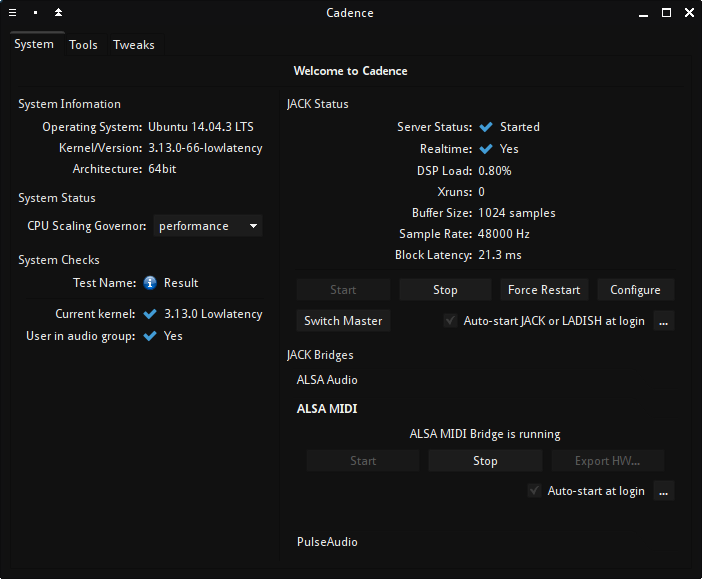
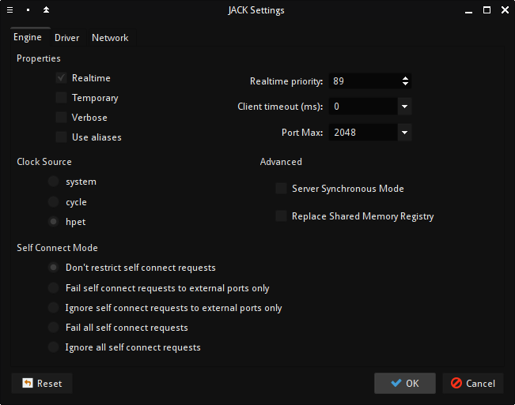
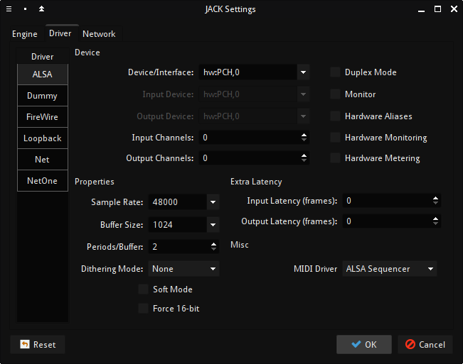

Предполагается, что KXStudio со всеми обновлениями уже установлена и настроена на компьютере (или на флэшке), поэтому только вкратце упомяну наиболее важные детали. Не рекомендуется запускать систему на виртуальной машине, потому что это создаст проблемы с производительностью и сведёт на нет преимущества ядра с низкой задержкой. Перед началом работы нужно запустить Cadence и настроить драйвер JACK на вывод аудио с минимально возможной задержкой, позволяющей работать без прерываний (xrun). Значения подбираются экспериментально. Частота дискретизации в 48 кГц является достаточной, задержки менее 20-25 мс приемлемы.
Лучше всего выбрать гувернер ЦП performance, чтобы прыжки частоты процессора не отражались на производительности аудио. Ещё желательно отключить вай-фай. MIDI-мост ALSA-JACK нужен, чтобы использовать приложения, поддерживающие только ALSA MIDI, и MIDI-клавиатуру. MIDI-клавиатуру и другие контроллеры нужно подключить, после чего нажать кнопку "Export HW..." и запустить мост. Тогда они станут отображаться в Catia/Claudia, и можно будет легко их привязать к нужным входам.
 На вкладке "Engine" показаны оптимальные параметры для работы аудио в режиме реального времени. В настройках драйвера отключен дуплекс-режим, потому что ввод звука из внешних источников в этой сессии использоваться не будет.